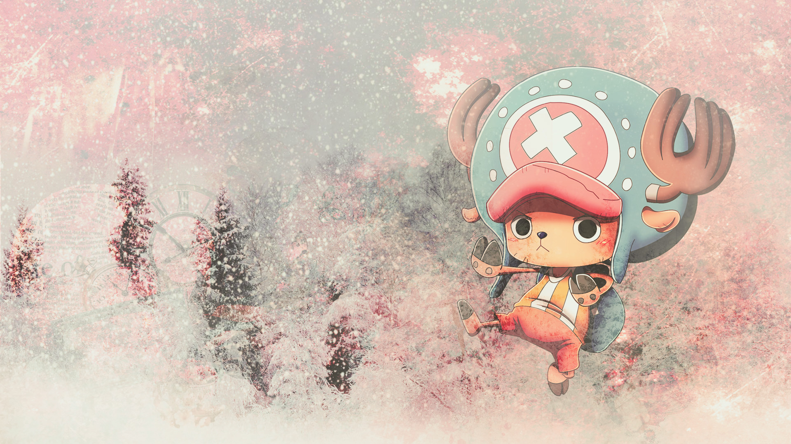
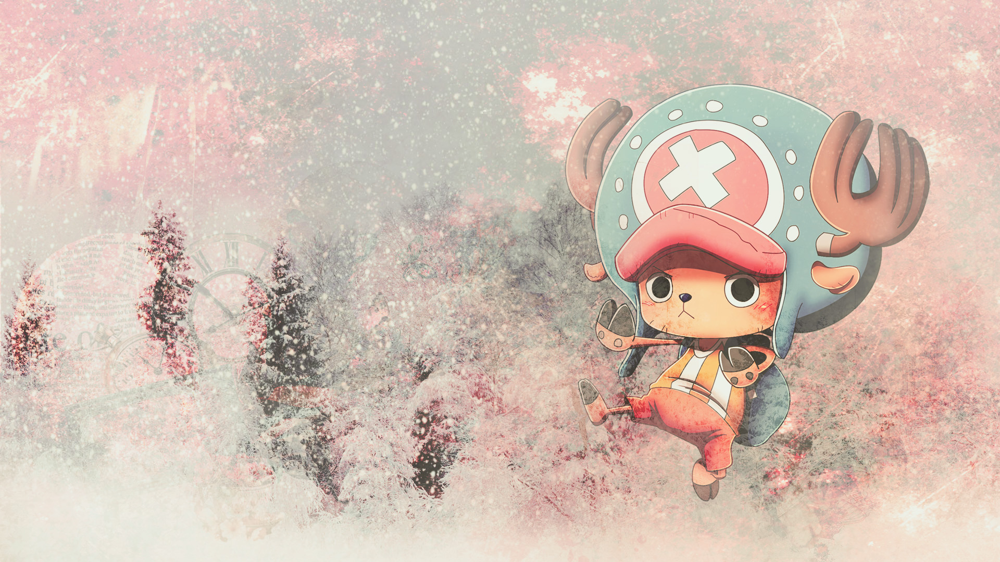

Monkey D. Luffy
Monkey D. Luffy, também conhecido como "Luffy do Chapéu de Palha" e comumente como Chapéu de Palha, é o fundador e capitão dos cada vez mais infames e poderosos Piratas do Chapéu de Palha, bem como o mais poderoso de seus melhores lutadores. Ele deseja encontrar o tesouro lendário deixado para trás pelo falecido Gol D. Roger e assim se tornar o Rei dos Piratas.
Roronoa Zoro
Roronoa Zoro, também conhecido como "Caçador de Piratas" Zoro, é o combatente dos Piratas do Chapéu de Palha e um ex-caçador de recompensas. Ele foi o primeiro membro a juntar-se à tripulação e também é um dos quatro melhores lutadores da tripulação, ao lado de Luffy, Sanji e Jinbe, e seu sonho é se tornar o maior espadachim do mundo.
Nami
Nami, a "Gata Ladra" é a navegadora dos Piratas do Chapéu de Palha e uma dos Oficiais Seniores da Grande Frota do Chapéu de Palha. Ela é o terceiro membro da tripulação dos Piratas do Chapéu de Palha onde atua como navegadora graças a seu conhecimento meteorológico. Nami possui um sonho, assim como seus companheiros, e almeja cartografar o primeiro mapa-múndi.
Usopp
Usopp também conhecido como "God Usopp" é o quarto membro da tripulação dos Chapéu de Palha, onde atua primariamente como atirador mas quando necessário cumpre outras posições como inventor, escultor e pintor. Usopp é caracterizado por sua covardia e fraqueza, e ainda por cima é um grande mentiroso, mas embarca com Luffy almejando se tornar um bravo guerreiro dos mares assim como seu pai Yasopp.
Vinsmoke Sanji
Sanji também conhecido como"Perna Preta", ele é oficialmente o quinto membro da tripulação onde atua como cozinheiro da tripulação do Chapéu de Palha, Sanji é caracterizado por ser elegante e mulherengo, mas também um grande lutador que utiliza somente seus pés e pernas para nunca comprometer suas mãos e assim afetar sua carreira como chef de cozinha. Seu sonho é encontrar o paraíso dos chefes, o All Blue.
Tony Tony Chopper
Chopper é uma rena que, após comer a Hito Hito no Mi, adquiriu a habilidade de se transformar e raciocinar como os humanos. Ele é sexto membro e o médico da tripulação do Chapéu de Palha onde seu sonho é se tornar um médico que cura todos os males e que pode tratar qualquer doença.
Nico Robin
Nico Robin, também conhecida como "Criança Demônio e "Luz da Revolução", é a arqueóloga e o setimo membro do Chapéu de Palha. Ela é a única sobrevivente da ilha destruída de Ohara, localizada no West Blue. Como resultado, ela é capaz de ler e decifrar Poneglyphs, uma habilidade que é considerada proibida e que ameaça o Governo Mundial. Seu sonho é encontrar o Rio Poneglyph, que conta a verdadeira história.
Franky
Franky é o carpinteiro e o oitavo membro do Chapéu de Palha. Ele é um cyborg de Water 7 que liderava a Família Franky, um grupo de desmantelamento de navios. Ele foi originalmente chamado de "Cutty Flam" até trocar seu nome original por seu apelido a pedidos de Iceburg para esconder sua identidade. Franky foi permitido se juntar aos Chapéus de Palha para realizar seu sonho de criar e dirigir um navio capaz de dar a volta ao mundo, o Thousand Sunny.
Brook
Brook foi o nono membro do Chapéu de Palha e também é um esqueleto músico que foi encontrado por Luffy e sua tripulação, em uma, embarcação fantasma, ingressando ao bando de Luffy. Brook é possuidor dos poderes da , Yomi Yomi no Mi (Fruta do Reviver), permitindo que ele possa retornar a vida, após a morte. Porém como ele demorou para encontrar seu corpo, enquanto vagava pelos mares na forma de alma, e quando o encontrou, já não estava mais inteiro. Seu sonho era reencontrar a baleia Laboon.
Jinbe
Jinbe também conhecido como "Cavaleiro do Mar" é o timoneiro dos Piratas do Chapéu de Palha. Ele é o décimo membro do Chapéu de Palha, se juntando durante o Arco País de Wano. Jinbe é um homem-peixe sendo um tubarão-baleia e um poderoso mestre do karatê Homem-Peixe. Seu sonho é realizar o desejo moribundo de seu ex-capitão Fisher Tiger de coexistência e igualdade entre humanos e homens-peixe.